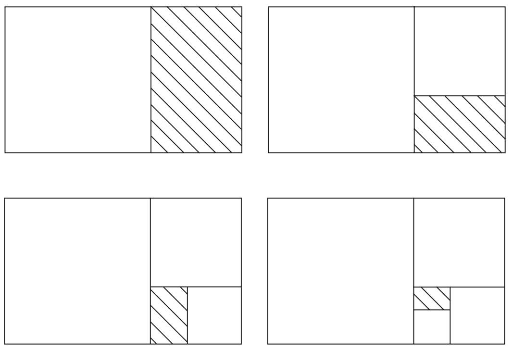
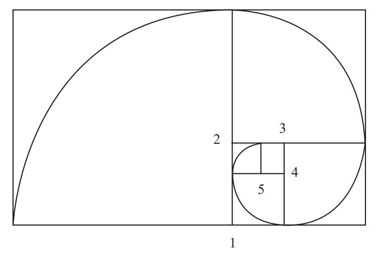
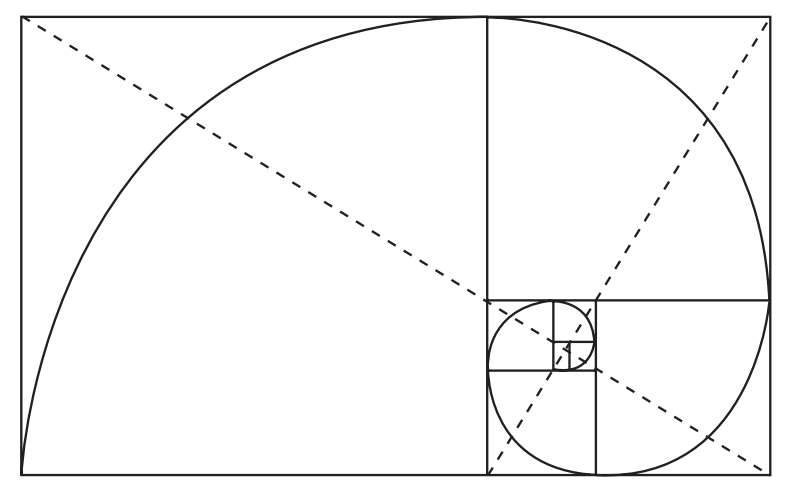
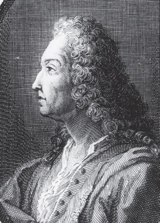
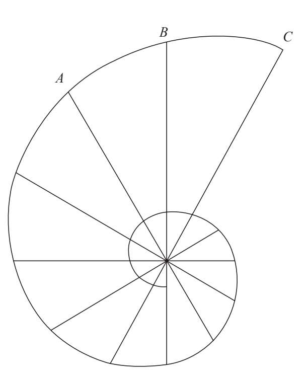
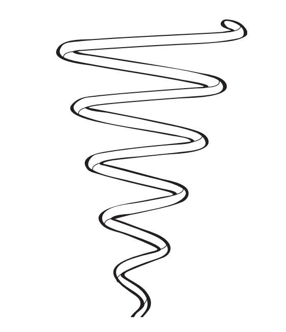
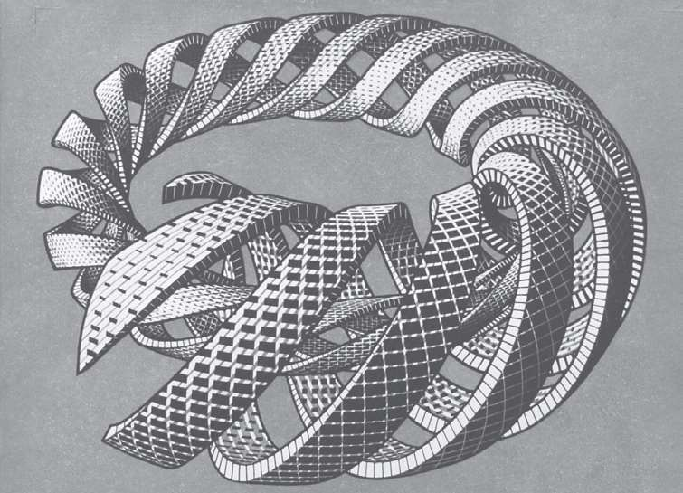

人们可以在螺线中找到黄金比例的某些不可思议之处。假设有一个黄金矩形，我们去掉其中的正方形来获得更小的黄金矩形，如下图所示，相信你已经对这个过程相当熟悉了。

接下来，我们在每个正方形内画四分之一圆。每条半径都是它们所在正方形的边，圆心是新出现的黄金矩形的顶点，即图中的点1、点2、点3、点4、点5等：

随着黄金矩形不断变小，如果我们继续画圆弧就会得到一个所谓的对数螺线的近似图形：

对数螺线是一种曲线，不管大小如何变化，它的形状依然保持不变。这种特性被称为自相似性。
等角是对数螺线的另一个重要性质，也就是说，如果我们从对数螺线的极点（中心点）画一条直线到其他任意点，这条线与对数螺线相交的夹角固定不变。根据这个性质，如果我们希望自己与观察点的夹角保持不变，就需要沿着对数螺线的轨迹接近这一点。因为极径（连接极点与对数螺线上的点的直线）以几何级数增长，所以对数螺线又称几何螺线。然而当极径扫过螺线的圆弧时，它所形成的夹角以等差数列增大。
严格地说，我们在黄金矩形中画出的曲线并不是螺线，因为它是人为地将不同的圆弧连接在一起，但与对数螺线已经十分接近。对数螺线与四分之一圆（90°弧）不相切，但是相交，而相交形成的夹角非常小。真正的对数螺线看起来应该是这样的：
对数螺线与雅科布·伯努利
对数螺线及其性质让众多数学大师为之着迷。雅科布·伯努利（1654—1705）就特别痴迷于对数螺线，因此花费了数年的时间进行研究。他对这种螺线非常喜爱，甚至要求把它和一句铭文刻到自己的墓碑上。墓志铭的原文为“Eadem mutato resurgo”，意为“纵然变化，依然故我”。尽管伯努利提出了明确的要求，但工匠刻出的却不是对数螺线，而是一连串大小不一的弧线，与伯努利的墓志铭完全不符。此刻，这位大师或许正气得在坟墓里打转！


如果我们保持螺线的旋转扩张，同时在高度上增加类似的变化，这样就创造了一条三维螺线，请看下图：

螺线的魅力不仅让科学家为之着迷，而且还让许多艺术家沉醉其中。

荷兰画家毛里茨·科尔内留斯·埃舍尔（1898—1972）通过绘制不可能图形、镶嵌图案和幻想世界而闻名。这幅作品完全以数学为基础。埃舍尔经常在创作中使用这种螺线，比如这幅创作于1953年的版画，它有一个很简单的名字，就叫《螺线》（Spirals）。
我们还没有发掘出螺线的所有特性。事实上，对螺线的研究才刚刚起步。稍后我们会看到黄金三角形中的螺线以及它们与生俱来的自然之美。[书ji分 享V 信jnztxy]